Sipariş alımından son teslimata kadar lojistik operasyonlarını yöneten yazılımlar tasarlıyor ve geliştiriyorum. Odak alanım çok kiracılı SaaS mimarisi, rota optimizasyonu ve operasyon otomasyonu.
Lojistik platformları · Rota ve kurye atama · Operasyon otomasyonu
Öne çıkan proje
Novajet — Son kilometre teslimat platformu
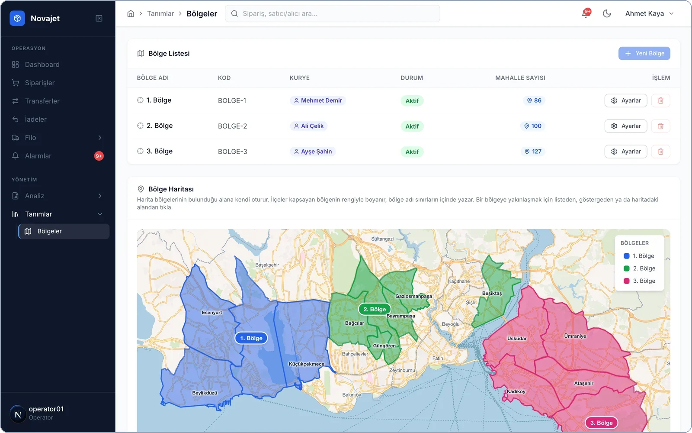 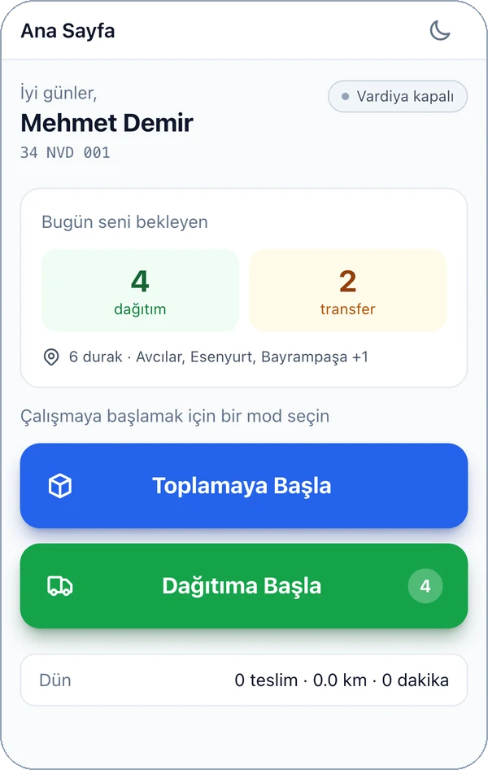
Kargo firmalarının sipariş, kurye ve filo operasyonunu tek yerden yönettiği çok kiracılı teslimat platformu.
- Kapasiteye dayalı kurye atama ve sıralı sevkiyat kuyruğu
- Rota optimizasyonu — gerçek yol mesafesi ve saate göre trafik katsayısı
- Canlı filo takibi, bölge yönetimi ve kurye performans analizi
- Kurye uygulaması (PWA) — çevrimdışı çalışma, barkod okuma, teslim kanıtı
- Yönetim paneli — kiracı yaşam döngüsü, plan/modül paketleri, denetim günlüğü
Rol: Mimari ve full-stack geliştirme · Teknoloji: NestJS, Next.js, PostgreSQL/PostGIS, Redis, WebSocket · Kaynak kodu özel
Diğer projeler
Temiz Çal — Spotify için içerik filtresi
Spotify'da çalan şarkıyı durdurmadan, yalnızca uygunsuz sözün geçtiği anlarda sesi kısan filtre. Zaman damgalı sözlerden saniye hassasiyetinde bir kısma planı çıkarır; sözü bulunmayan şarkılar için konuşma tanıma (Whisper) ile zaman damgası üretir.
Teknoloji: JavaScript (Chrome uzantısı), Python, Whisper · Geliştirme aşamasında
iOS projeleri (Swift)
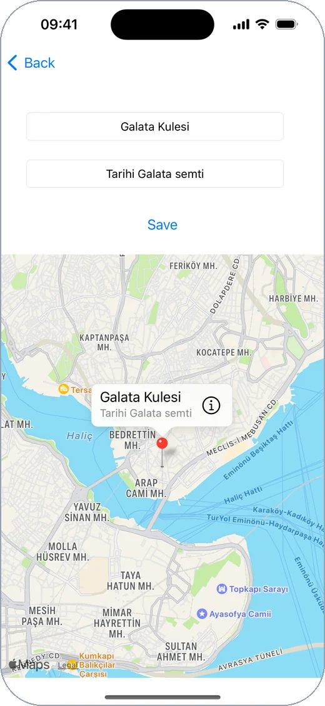 TravelBook Harita ve kayıtlı yerler · MapKit, Core Data |
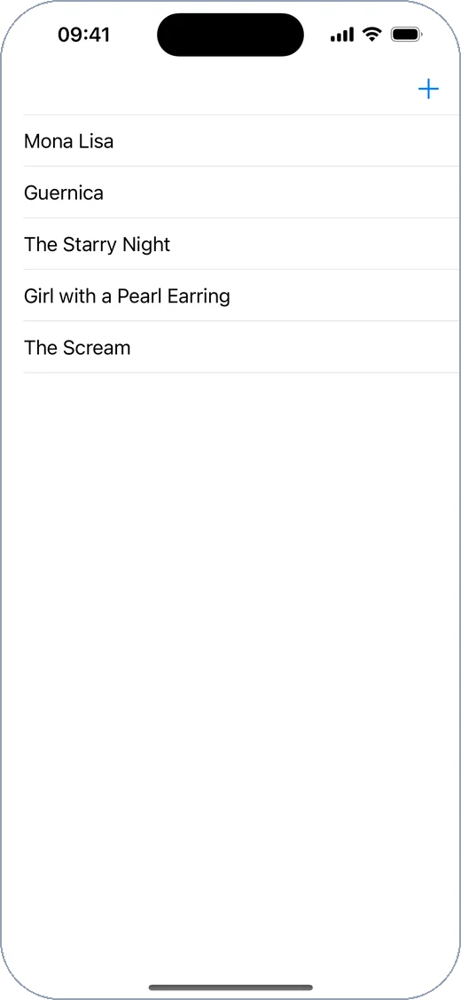 ArtBook Fotoğraflı kayıt defteri · Core Data |
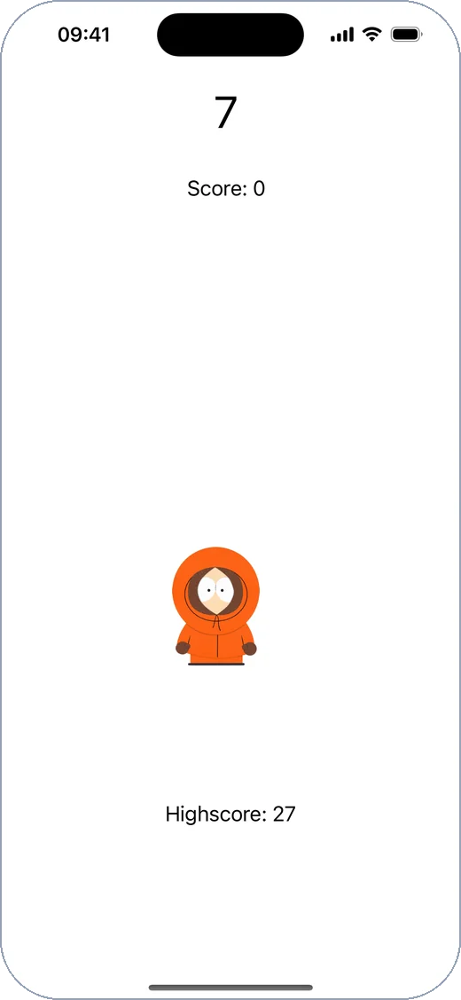 CatchTheKenny Zamanlı dokunma oyunu · Timer |
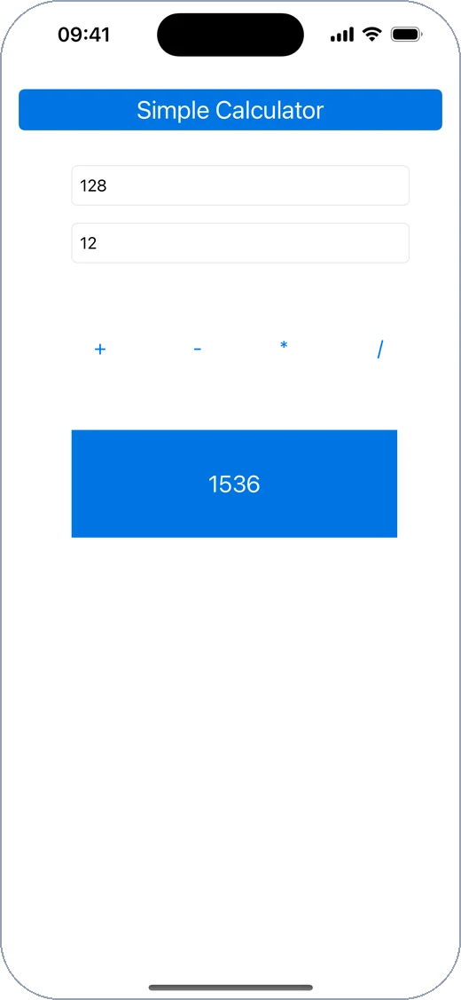 SimpleCalculator Hesap makinesi |
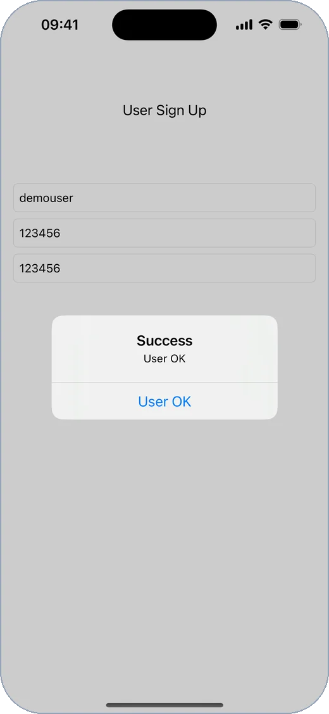 AlertProject Form doğrulama ve uyarılar |
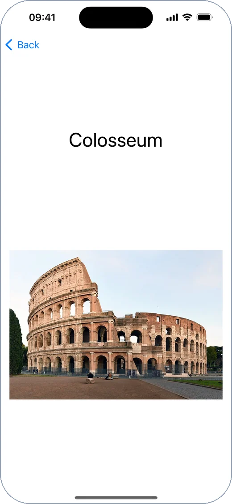 LandmarkBook Liste ve detay ekranı · UITableView |
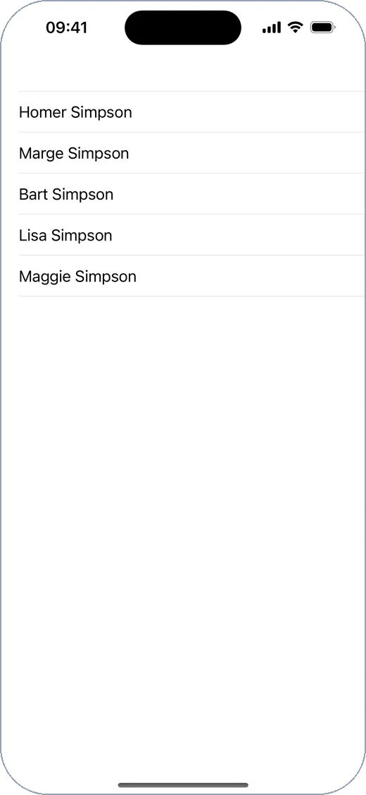 SimpsonBook Liste ve detay ekranı · UITableView |
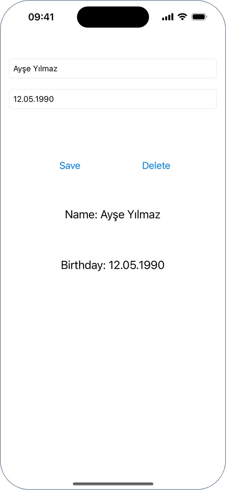 BirthdayNoteTaker Not kaydı · UserDefaults |
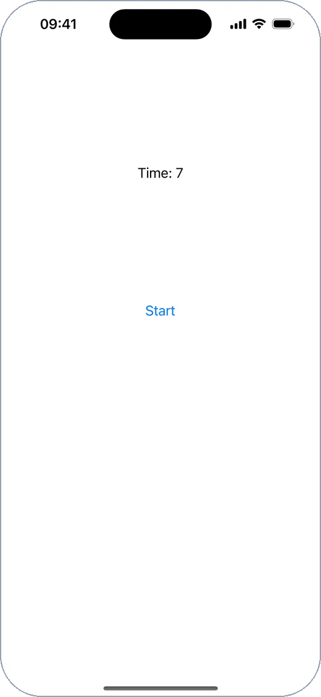 TimerProject Geri sayım sayacı · Timer |
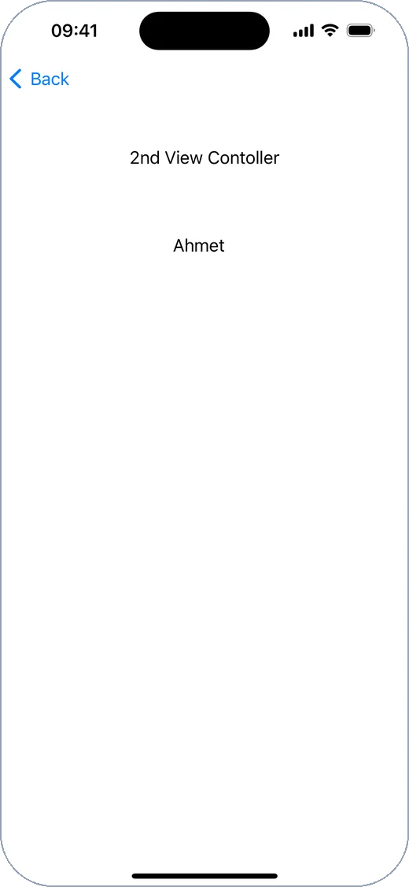 SegueApp Ekranlar arası veri aktarımı |
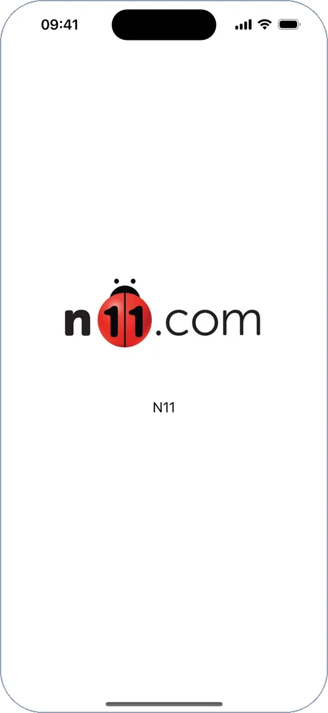 GestureRecognizer Dokunma hareketleri |
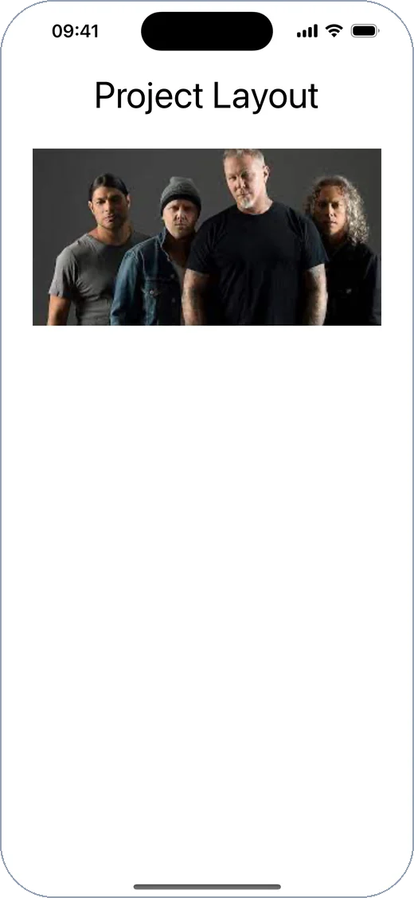 ProjectLayout Auto Layout yerleşimi |
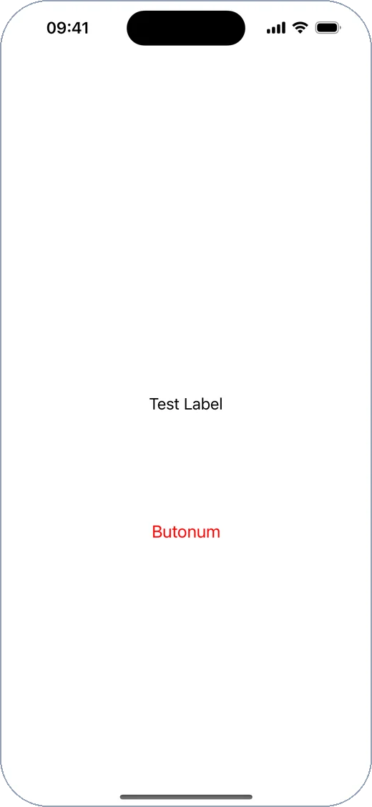 ObjectWithCode Kodla oluşturulan arayüz |
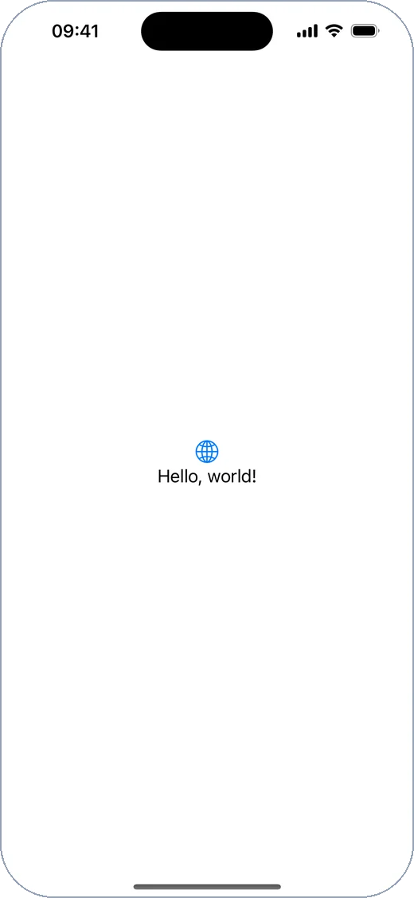 SwiftUI SwiftUI denemesi |
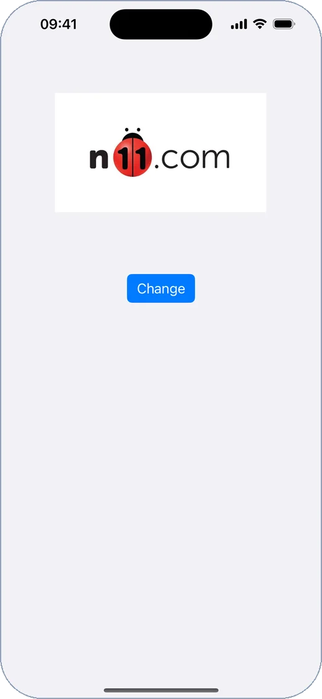 FirstApp İlk UIKit uygulaması |
UIKit ile yazılmış eğitim ve deneme projeleri; her biri tek ekranla gösterildi.
Teknoloji
| Alan | Araçlar |
|---|---|
| Backend | |
| Frontend | |
| Mobil | |
| Altyapı |
İletişim